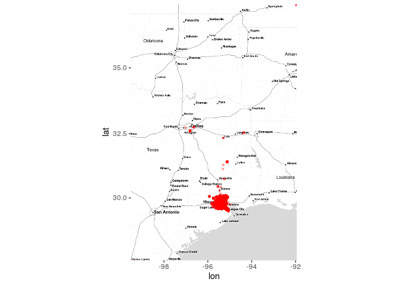
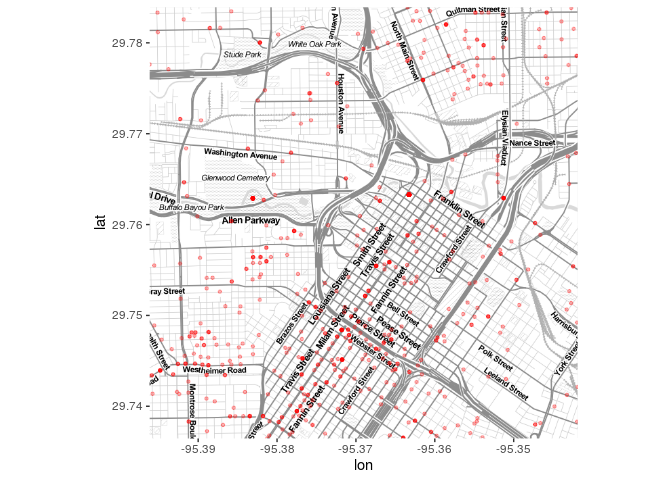
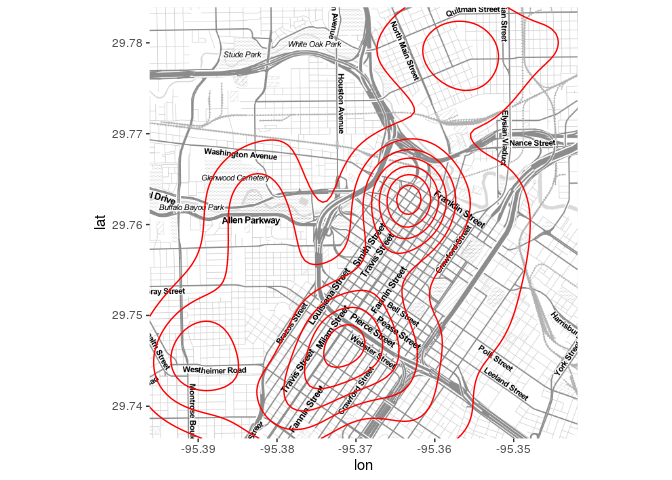
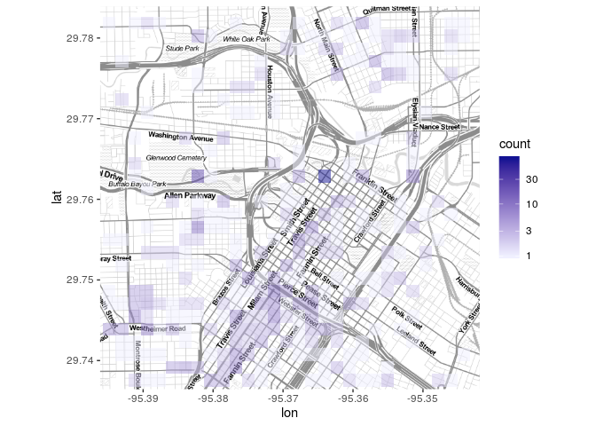
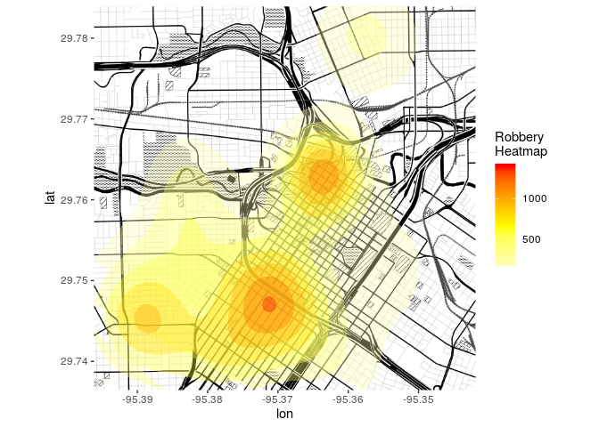
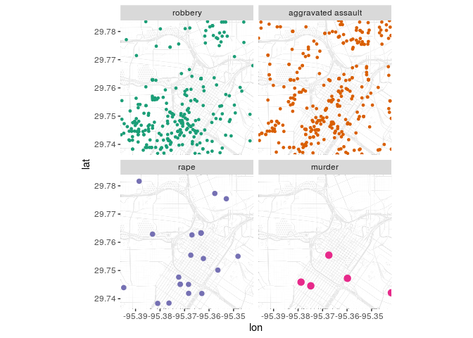

library(ggmap)
library(tidyverse)
library(viridis)
load("data/googlemaps.rda")The crime dataset contains crime reports for Houston from January-August 2010, geocoded with Google Maps.
tibble(crime)Lots of useful info: dates, types of crimes, locations by type of place, locations by street, locations by longitude/latitude …
First, let’s get an overview of the crimes on the map. Using qmplot, we put in longitude and latitude for the x, and y parameters, and specify the data as the crime dataset. This plots the crimes indiscriminantly.
q1 <- qmplot(lon, lat, data = crime,
maptype = "toner-lite", colour = I("red"), size = I(0.9),alpha=I(.3))Or
get_mapzone <- function(data, latcol="lat", loncol="lon") {
lon <- na.omit(data[[loncol]])
lat <- na.omit(data[[latcol]])
return(c(left=min(lon),right=max(lon),bottom=min(lat),top=max(lat)))
}
houston_mz <- get_mapzone(crime)
houston_map1 <- get_stamenmap(houston_mz,zoom=7, maptype="toner-lite")
## Source : http://tile.stamen.com/toner-lite/7/28/49.png
## Source : http://tile.stamen.com/toner-lite/7/29/49.png
## Source : http://tile.stamen.com/toner-lite/7/30/49.png
## Source : http://tile.stamen.com/toner-lite/7/31/49.png
## Source : http://tile.stamen.com/toner-lite/7/28/50.png
## Source : http://tile.stamen.com/toner-lite/7/29/50.png
## Source : http://tile.stamen.com/toner-lite/7/30/50.png
## Source : http://tile.stamen.com/toner-lite/7/31/50.png
## Source : http://tile.stamen.com/toner-lite/7/28/51.png
## Source : http://tile.stamen.com/toner-lite/7/29/51.png
## Source : http://tile.stamen.com/toner-lite/7/30/51.png
## Source : http://tile.stamen.com/toner-lite/7/31/51.png
## Source : http://tile.stamen.com/toner-lite/7/28/52.png
## Source : http://tile.stamen.com/toner-lite/7/29/52.png
## Source : http://tile.stamen.com/toner-lite/7/30/52.png
## Source : http://tile.stamen.com/toner-lite/7/31/52.png
## Source : http://tile.stamen.com/toner-lite/7/28/53.png
## Source : http://tile.stamen.com/toner-lite/7/29/53.png
## Source : http://tile.stamen.com/toner-lite/7/30/53.png
## Source : http://tile.stamen.com/toner-lite/7/31/53.png
(ggmap(houston_map1)
+ geom_point(data=crime,colour="red",size=0.9,alpha=0.3)
)
## Warning: Removed 5 rows containing missing values (geom_point).
Reduce crime to violent crimes in downtown Houston:
violent_crime <-
(crime
%>% filter(
!offense %in% c("auto theft", "theft", "burglary"),
-95.39681 <= lon & lon <= -95.34188,
29.73631 <= lat & lat <= 29.78400
)
%>% mutate(
## drops unused levels, mitigates downstream errors
offense = fct_drop(offense),
offense = fct_relevel(offense,
c("robbery", "aggravated assault", "rape", "murder")
)
)
)
houston_map2 <- get_stamenmap(get_mapzone(violent_crime), maptype="toner-lite",
zoom=14)
## Source : http://tile.stamen.com/toner-lite/14/3850/6770.png
## Source : http://tile.stamen.com/toner-lite/14/3851/6770.png
## Source : http://tile.stamen.com/toner-lite/14/3852/6770.png
## Source : http://tile.stamen.com/toner-lite/14/3850/6771.png
## Source : http://tile.stamen.com/toner-lite/14/3851/6771.png
## Source : http://tile.stamen.com/toner-lite/14/3852/6771.png
## Source : http://tile.stamen.com/toner-lite/14/3850/6772.png
## Source : http://tile.stamen.com/toner-lite/14/3851/6772.png
## Source : http://tile.stamen.com/toner-lite/14/3852/6772.png
## Source : http://tile.stamen.com/toner-lite/14/3850/6773.png
## Source : http://tile.stamen.com/toner-lite/14/3851/6773.png
## Source : http://tile.stamen.com/toner-lite/14/3852/6773.png
(ggmap(houston_map2)
+ geom_point(data = violent_crime, colour = "red",size = 0.9, alpha=.3)
)
(ggmap(houston_map2)
+ geom_density2d(data = violent_crime, aes(x=lon,y=lat), col="red")
)
(ggmap(houston_map2)
+ geom_bin2d(data = violent_crime, alpha=0.5)
+ scale_fill_gradient(low="#F0F0FF", high="#131393",
trans=scales::log10_trans())
)
## Warning: Removed 7 rows containing missing values (geom_tile).
To make the contour map more useful, we can assign a gradient. Let’s look at the robberies:
houston_map3 <- get_stamenmap(get_mapzone(violent_crime),
maptype="toner-background",
zoom=14)
## Source : http://tile.stamen.com/toner-background/14/3850/6770.png
## Source : http://tile.stamen.com/toner-background/14/3851/6770.png
## Source : http://tile.stamen.com/toner-background/14/3852/6770.png
## Source : http://tile.stamen.com/toner-background/14/3850/6771.png
## Source : http://tile.stamen.com/toner-background/14/3851/6771.png
## Source : http://tile.stamen.com/toner-background/14/3852/6771.png
## Source : http://tile.stamen.com/toner-background/14/3850/6772.png
## Source : http://tile.stamen.com/toner-background/14/3851/6772.png
## Source : http://tile.stamen.com/toner-background/14/3852/6772.png
## Source : http://tile.stamen.com/toner-background/14/3850/6773.png
## Source : http://tile.stamen.com/toner-background/14/3851/6773.png
## Source : http://tile.stamen.com/toner-background/14/3852/6773.png
robbery <- violent_crime %>% filter(offense=='robbery')
(ggmap(houston_map3)
+ stat_density_2d(data=robbery,
aes(fill = ..level..), geom = "polygon",
alpha = .35, colour = NA)
+ scale_fill_gradient2("Robbery\nHeatmap",
low = "white", mid = "yellow",
high = "red", midpoint = 650)
)
(ggmap(houston_map3,darken=c(0.9,"white")) ## fade map layer
+ geom_point(data = violent_crime, aes(colour = offense, size=offense)) +
facet_wrap(~ offense)+
scale_colour_brewer(palette="Dark2")+
scale_size_manual(values=c(1,1,2,3))+
theme(legend.position="none")
)